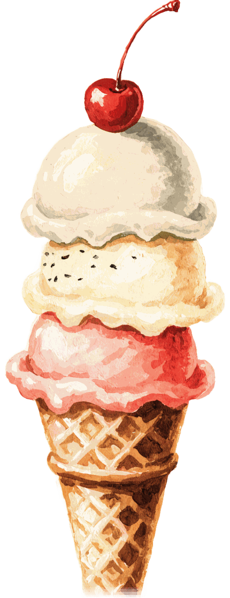

die erste Zutat
Erdbeeren
Unser Fruchteis entsteht aus echten Früchten. Die Erdbeeren dafür kommen aus der Bodenseeregion, praktisch von nebenan.
Direkt an der Häfler Promenade in Friedrichshafen — mit einzigartigem Seepanorama, italienischer Tradition und einem Ort der Erholung und Entspannung.


1953 eröffnete eine traditionelle Eismacher-Familie aus den Dolomiten das allererste Eiscafe an der wunderschönen Häfler Uferpromenade. Bis heute wird diese Tradition mit Herz weitergeführt — seit 2011 durch die Inhaber Ivan Bottecchia & Alan Piai, ebenfalls aus den Dolomiten.
Mehr als 70 Jahre Erfahrung, echtes Handwerk und die Liebe zum italienischen Eis — Tag für Tag frisch bei uns hergestellt.

Nur natürliche, frische Produkte, ganz ohne Zusatzstoffe.
Unser Fruchteis entsteht aus echten Früchten. Die Erdbeeren dafür kommen aus der Bodenseeregion, praktisch von nebenan.
Unser Vanilleeis machen wir mit echten Vanilleschoten aus Madagaskar.
Die Basis für unser Eis: frische Milch aus Ravensburg, mit besonderem Augenmerk auf regionale Herkunft.
„Unsere einzige Geheimzutat ist Zeit."
Seit mehr als 60 Jahren stellen wir unser Eis auf ganz traditionelle Weise her: mit Herz, Leidenschaft und der nötigen Zeit.

Eine Tasse Kaffee, hausgemachtes Eis oder eine von vielen anderen Köstlichkeiten — verwöhnt von unserem Team, mit einzigartigem Seepanorama direkt am Bodensee.

Seestraße 10 · 88045 Friedrichshafen
Dienstag – Sonntag ab 9:30 Uhr geöffnet
Montag Ruhetag — an Pfingst-, Oster- & Seehasenmontag auf den Dienstag verlegt

Charlottenstraße 1 · 88045 Friedrichshafen
Montag – Freitag ab 9:00 Uhr
Samstag – Sonntag ab 11:00 Uhr
Saison: Stammhaus von Anfang März bis zum zweiten Sonntag im Oktober · „Eis to go“ von Ende Februar bis Mitte Oktober
„Ein Stückchen Italia am Bodensee.“
„Seit 2011 betreiben Ivan Bottecchia und Alan Piai das Eiscafe ‚Italia‘ an der Häfler Promenade.“
„Als das Eis nach Friedrichshafen kam.“
Ein Häfler Klassiker: Auf unserer Terrasse machte es sich einst eine Wildente gemütlich und brütete im Blumentopf sechs Eier aus. (Südkurier)
Eiscafe Italia · EisLine GmbH
Ivan Bottecchia & Alan Piai
Seestraße 10 · 88045 Friedrichshafen
Öffnungszeiten Stammhaus:
Dienstag – Sonntag ab 9:30 Uhr · Montag Ruhetag